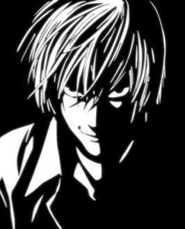
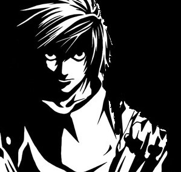
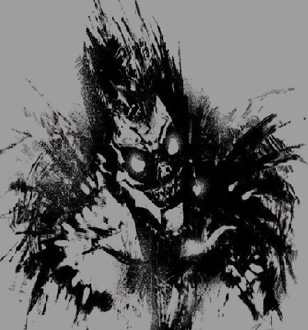

Les cahiers de la mort sont d'apparence anodine, si ce n'est leur
titre en lettres gothiques qui trahit de plus sombres desseins.
Light Yagami est un lycéen surdoué qui juge le monde actuel criminel,
pourri et corrompu.
Sa vie change du tout au tout le jour où il ramasse par hasard un
mystérieux cahier intitulé « Death Note ».
Son mode d'emploi indique que « la personne dont le nom est écrit dans
ce cahier meurt ». D'abord sceptique,
Light décide toutefois de tester le cahier et découvre que son pouvoir
est bien réel. Il rencontre l'ancien propriétaire du Death Note,
un dieu de la mort nommé Ryûk. Celui-ci déclare avoir volontairement
laissé tomber son carnet dans le but de se divertir.
Light décide d'utiliser le Death Note pour exterminer les criminels,
dans le but de bâtir un monde parfait dont il sera le dieu.
Il apprend peu à peu à se servir des pouvoirs du cahier et de ses
règles :
l'utilisateur ne peut tuer une personne que s'il connait son visage,
en y inscrivant son prénom et son nom de famille.
Il peut également en préciser la cause et les circonstances
détaillées, la cause par défaut étant la crise cardiaque.
Les
nombreuses morts inexpliquées de criminels à travers le monde attirent
l'attention d'Interpol et du mystérieux L,
un détective particulièrement talentueux, mais dont personne ne
connaît l'identité. L décide d'enquêter sur le tueur en série,
surnommé « Kira » (キラ?, dérivé de la prononciation japonaise de «
killer ») par le grand public.
| Personnages | Illustration | Histoire | Âge |
|---|---|---|---|
| Light Yagami (夜神 月) |  |
Personnage principal de l'histoire, est un lycéen surdoué qui juge
le monde actuel corrompu et perverti. Quand il trouve par hasard le Death Note abandonné par un dieu de la mort (Ryuk), il décide de l'utiliser pour exterminer tous les criminels, sous le nom de Kira (mot japonais dérivé de killer, « tueur » en anglais). Son but est de créer un monde utopique débarrassé du crime, où il pourra régner en dieu. Sa santé mentale et son humanité s'altèrent au fur et à mesure que l'histoire progresse. |
Naissance : 28 février 1986 Décès : 28 janvier 2010 (à 23 ans) |
| L (エル) |  |
Principal adversaire de Light, L est considéré comme le meilleur
détective au monde, bien que son identité soit inconnue. Il enquête sur l'affaire Kira. Il se fait appeler Ryûzaki et Hideki Ryuga. Son nom réel reste inconnu dans les 12 premiers tomes du manga, mais son véritable nom, L Lawliet (エル・ローライト, Eru Rōraito), est dévoilé dans le 13e tome, How to read it. Son comportement excentrique n'a d'égal que son intelligence. |
Naissance : 31 octobre 1979 (1982 dans l'animé) Décès : 5 novembre 2004 (à 25 ans) (2007 dans l'animé) |
| Ryuk (リューク) |  |
Ryuk est un dieu de la mort qui s'ennuie profondément dans le monde
des dieux de la mort. Possédant deux Death Note, il en abandonne un dans le monde des humains dans le but de se divertir. Il suit Light partout (car celui-ci est le nouveau propriétaire du Death Note et Ryuk se doit de le suivre jusqu'à la mort de Light) mais reste neutre par rapport aux événements. |
Naissance : inconnue |